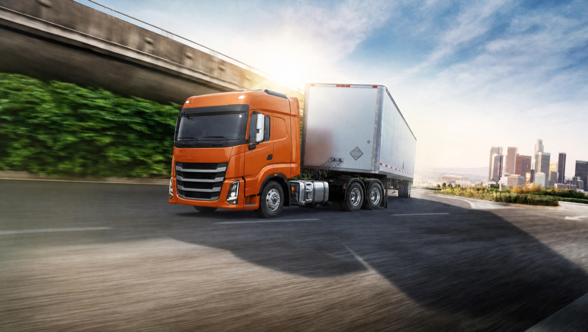
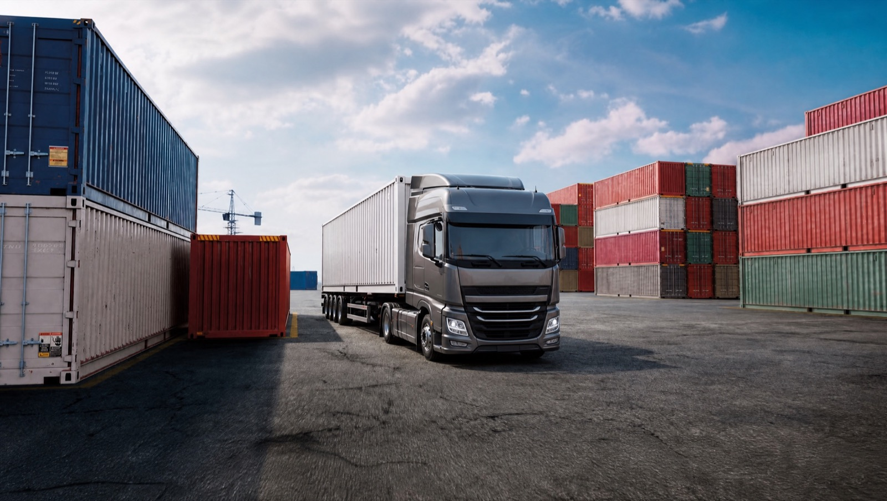
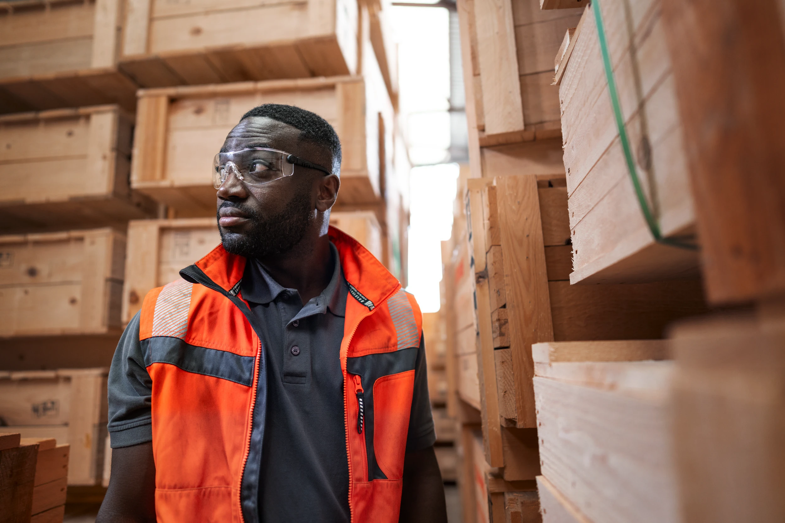

Fast decisions
Fewer layers between the problem and the people responsible for solving it.
International logistics across Europe and beyond
International road, rail, sea and air logistics across Europe and beyond — managed with dedicated ownership from first decision to final delivery.
Operational evidence
Markets and corridors
Holsen coordinates international freight across established European markets and operationally demanding routes beyond them.
Discuss Your RouteServices
Road, rail, sea and air freight — supported by contract logistics, customs and value-added services when the solution requires more than transport alone.

01Road FreightFlexible international transport for direct, groupage and complex route requirements.
02Sea FreightInternational ocean solutions for high-capacity and long-distance supply chains.
03Air FreightTime-critical international transport when speed and coordination are decisive.

04Rail FreightHigh-capacity links between European and Eurasian markets.
05Contract LogisticsLong-term operational solutions built around your supply-chain requirements.

06Customs ServicesDocumentation and customs coordination across international borders.
07Value-added ServicesAdditional handling and operational support around the shipment.
Not sure which service fits? Tell us what you need to move — our team will help define the right solution.Service 1 of 8
Supplier qualification
Holsen works with companies that need regular transport, coordination across several markets or clear ownership for a complex shipment. Fit is determined by the operational requirement — not company size alone.
Discuss Your RequirementWhy Holsen
Fewer layers between the problem and the people responsible for solving it.
Clear responsibility from planning through final delivery.
Experience where routes, regulations and operating conditions require deeper coordination.
Flexible multimodal capacity shaped around the route, timing and cargo requirements.
Industry expertise
The right transport plan starts with the cargo, compliance requirements and operating realities — not a standard template.
Selected industry
Seasonal volumes, market timing and dependable capacity.
Selected industry
Cargo-specific planning, documentation and handling.
Selected industry
Flexible planning for complex freight and operating conditions.
Selected industry
Reliable flow, cargo integrity and predictable delivery.
Selected industry
Capacity and dependable scheduling for high-volume movements.
Selected industry
Coordinated handling for sensitive, valuable and time-critical goods.
Selected industry
Time-sensitive supply chains and production continuity.
Selected industry
Requirements-led planning for sensitive products.
Contract logistics relationships
Holsen assigns one accountable team, agrees how the operation will run and reviews service performance against defined measures.
Decision support
We compare distance, urgency, capacity, route access, cargo requirements and total supply-chain cost before recommending a mode. When one mode is not enough, the proposed plan connects the stages and assigns responsibility across them.
| Mode | Best for | Flexibility | Typical speed | Capacity | Relative CO₂ profile |
|---|---|---|---|---|---|
| Road | Door-to-door European transport and flexible routes | Very high | High | Medium | Medium |
| Rail | High-volume inland corridors and long distances | Medium | Medium | High | Lower |
| Sea | Very high-volume, long-distance freight | Low | Low | Very high | Lower |
| Air | Urgent, high-value or time-critical freight | Medium | Very high | Low | Highest |
These are general relative characteristics, not route-specific guarantees. Do not treat them as hard transit-time, cost or emissions claims.
Decision support
We compare distance, urgency, capacity, route access, cargo requirements and total supply-chain cost before recommending a mode. When one mode is not enough, the proposed plan connects the stages and assigns responsibility across them.
Talk to Our Logistics Team| Mode | Best for | Operational profile |
|---|---|---|
| 01Road | Door-to-door European transport and flexible routes |
|
| 02Rail | High-volume inland corridors and long distances |
|
| 03Sea | Very high-volume, long-distance freight |
|
| 04Air | Urgent, high-value or time-critical freight |
|
These are general relative characteristics, not route-specific guarantees. Do not treat them as hard transit-time, cost or emissions claims.
Operational proof
Case study 1 of 3
Insights
Tell us what needs to move, where it needs to go and what makes the operation complex. Our team will review the requirement and define the next step.